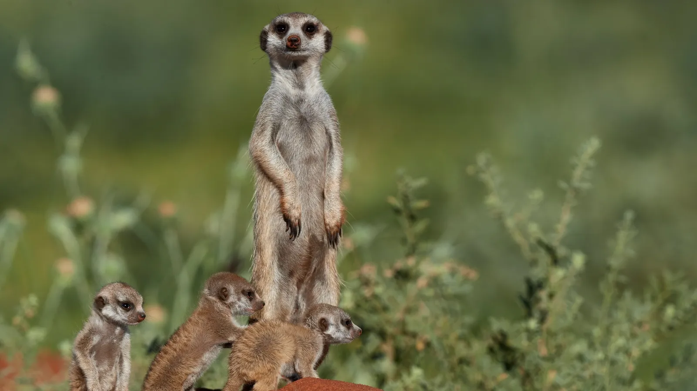
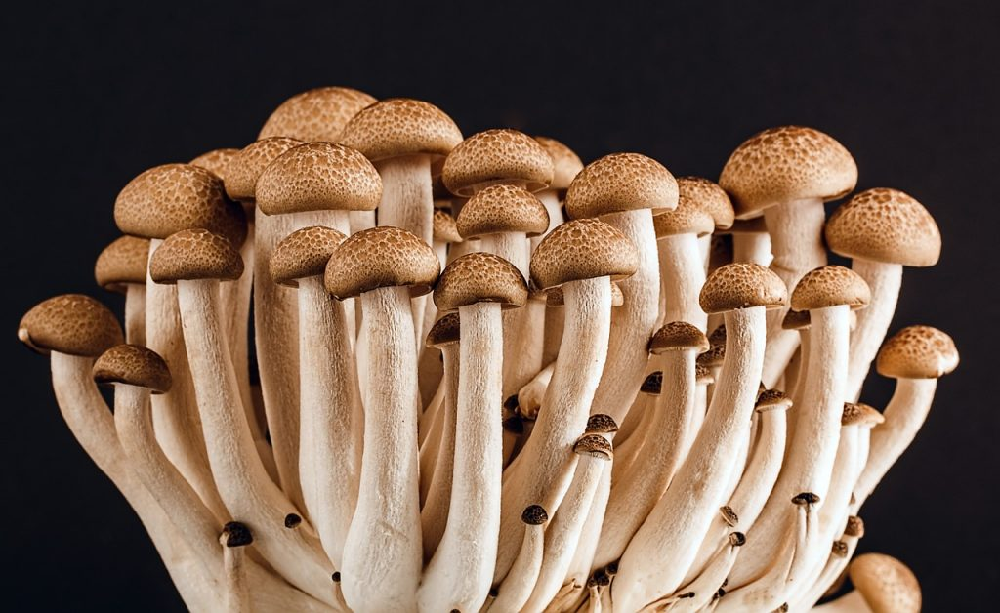
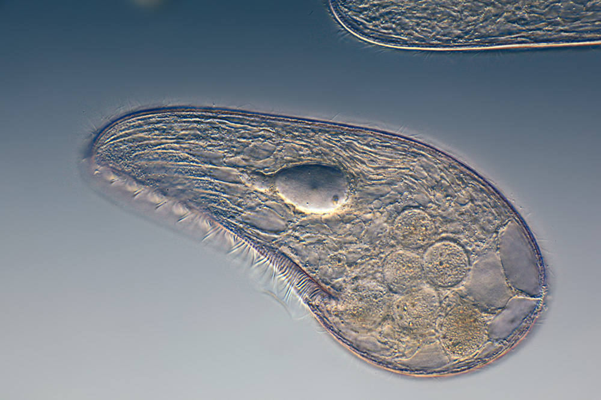
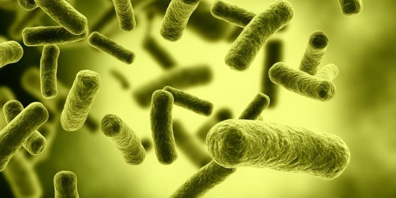

Índice:
El reino Animalia es el más evolucionado y se divide en dos grandes grupos: vertebrados e invertebrados. Los animales son seres pluricelulares y eucariotas de alimentación heterótrofa, respiración aeróbica, reproducción sexual y capacidad de desplazamiento. Este reino es uno de los más biodiversos y está compuesto por mamíferos, peces, aves, reptiles, anfibios, insectos, moluscos y anélidos, entre otros.

El reino animal se divide en:
Los árboles, las plantas y demás especies vegetales forman parte del reino Plantae, uno de los más antiguos y que se caracteriza por su naturaleza inmóvil, pluricelular y eucariota. Estos seres autótrofos, que contienen celulosa y clorofila en sus células, son imprescindibles para la vida en la Tierra al liberar oxígeno a través de la fotosíntesis. En cuanto a la forma de reproducirse, esta puede ser de tipo sexual o asexual.
El reino Vegetal se divide en:
Este nombre se utiliza para designar al reino de los hongos, que contempla a las levaduras, los mohos y todas las especies de setas. Estos organismos pluricelulares, aerobios, eucariotas y heterótrofos contienen quitina en sus paredes celulares, parasitan a otros seres vivos para alimentarse y se reproducen mediante esporas.

El reino Fungi se divide en:
Este grupo es el más primitivo de los eucariontes y de él provendrían todos los demás. El reino Protista es parafilético —contiene al ancestro común pero no a todos sus descendientes— y engloba a aquellos organismos eucariotas que no se consideran ni animales, ni plantas ni hongos, como los protozoos. Al ser tan heterogéneo resulta difícil caracterizarlo, ya que sus integrantes tienen muy pocas cosas en común.

El reino Protoctista se divide en:
Es el reino de los seres vivos microscópicos y aglutina a los organismos procariotas (arqueas y bacterias). Este grupo está presente en todos los hábitats y lo forman seres unicelulares sin núcleo definido. La mayoría de las bacterias son aerobias y heterótrofas, mientras las arqueas suelen ser anaerobias y de metabolismo quimiosintético.

El reino monera se divide en: